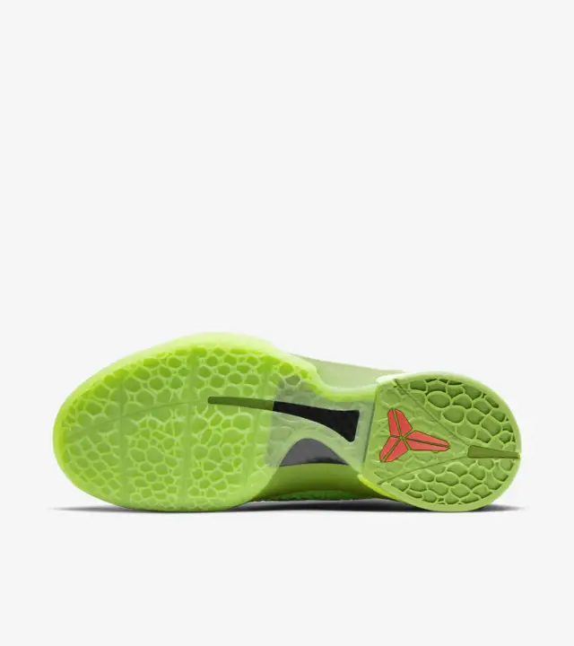
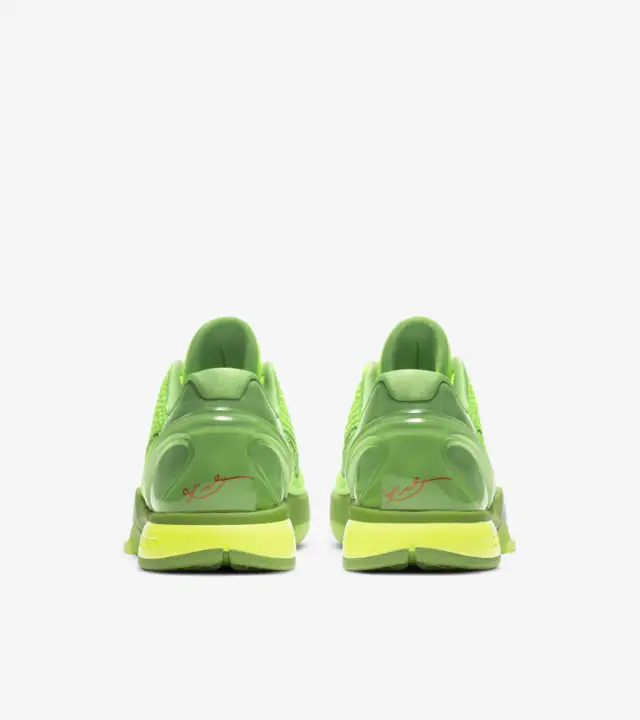

|

|

|
The Kobe 6 Protro is based on a favourite colourway originally released on Christmas Day 2010. It features a scaly, reptile-inspired upper with Lime Green colouring—a playful recolouring of Kobe's Black Mamba persona. Lower, sleeker and faster-looking than before, it's fitted with a large, flexible Air Zoom Turbo unit, responsive foam and scaled-down traction for improved court feel.
The Green Apple colorway of the Nike Zoom Kobe 6 ‘Grinch’ debuted on Christmas Day in 2010, evoking the Dr. Seuss figure known for ruining everyone’s favourite December holiday. The deadly Green Mamba snake, with green scales and deep black eyes, inspired this colorway, which can be seen on the scaly Mamba-like texture on the upper, with a contrasting black Swoosh. The Christmas motif is tied together with red embellishments, which are accented by Kobe Bryant’s red emblem on the tongue.
COLORWAY: Lime Green/Varsity Red-Black
|